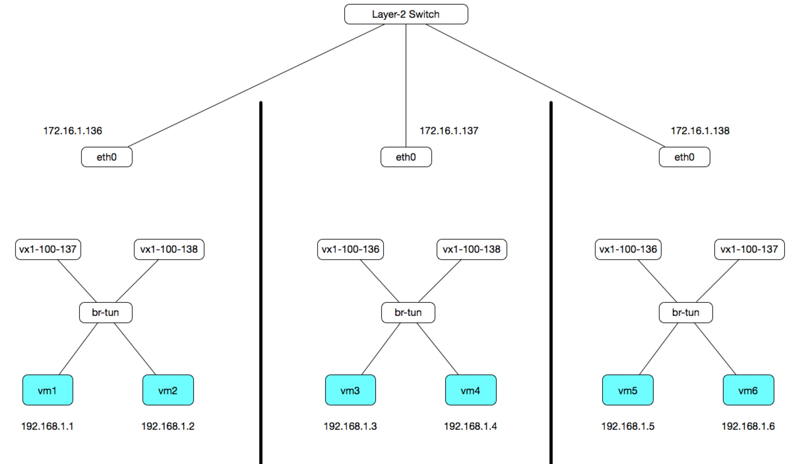
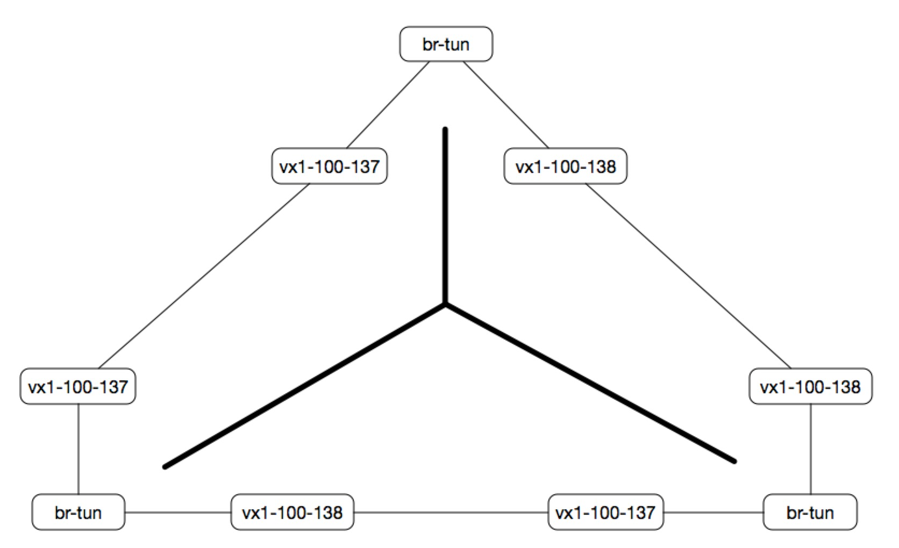

三. ovs基本使用
同宿主，同子网的2台VM互通¶
# 建立桥接 ovs-vsctl add-br br-int # 用veth模拟vm，将veth在宿主上的一端加入桥接 ovs-vsctl add-port br-int poi-vm1 ovs-vsctl add-port br-int poi-vm2
同宿主，不同子网之间隔离（分别桥接）¶
# 建立桥接，biv-100是子网1，biv-200是子网2 ovs-vsctl add-br biv-100 ovs-vsctl add-br biv-200 # 用veth模拟vm，2个vm在宿主上的一端分别加入2个桥接 ovs-vsctl add-port biv-100 poi-vm1 ovs-vsctl add-port biv-200 poi-vm2
同宿主，不同子网之间隔离（打tag）¶
# 建立桥接 ovs-vsctl add-br br-int # 用veth模拟vm，2个vm在宿主上的一端加入桥接，同时打tag ovs-vsctl add-port br-int poi-vm1 -- set port poi-vm1 tag=100 ovs-vsctl add-port br-int poi-vm2 -- set port poi-vm2 tag=200
不同宿主，同子网互通这么做会环路¶

这样看上去好像没啥问题，但是这个图可以画成这样：

这样就形成了一个环路，如果宿主机就2台还不会环路，只要达到3台就会开始环路
同宿主，不同桥接之间二层互通¶
# 建立桥接 ovs-vsctl add-br biv-100 ovs-vsctl add-br biv-200 # 创建patch port，2端分别桥接到biv-100和biv-200 ovs-vsctl add-port biv-100 patch-to-200 -- set interface patch-to-200 type=patch -- set interface patch-to-200 options:peer=patch-to-100 ovs-vsctl add-port biv-200 patch-to-100 -- set interface patch-to-100 type=patch -- set interface patch-to-100 options:peer=patch-to-200 # 用veth模拟vm，vm在宿主的一端加入桥接 ovs-vsctl add-port biv-100 poi-vm1 ovs-vsctl add-port biv-200 poi-vm2